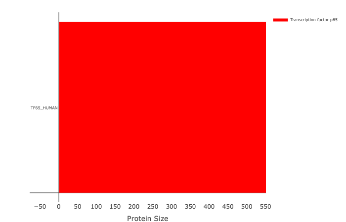
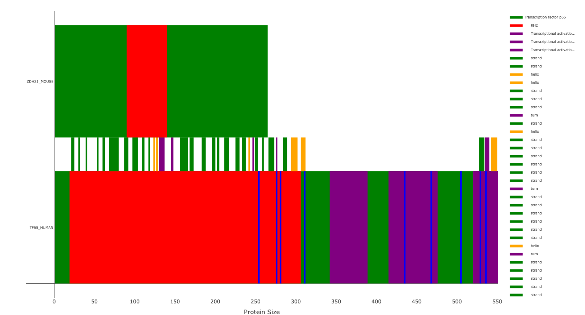

A R package that allows drawing of data from the UniProt API.
The goal of uniprotProteinView is to provide a means to show a graphical representation of the UniProt data as well as allow easy cross-comparison of features between different proteins for easy analysis of protein features.
There are two versions available, the primary version is an R-package, while the second one is a python port.
uniprotProteinView::drawProtein("Q04206")
uniprotProteinView::drawProtein( proteins = list(type = c("Q04206", "Q9D270"), colors = c("green", "green")), types = list(type = c("domain", "region of interest"), colors = c("red", "purple")), descriptionSearch = list(type = "phos", colors = "blue"), offSetFeatures = list(type = c("strand", "helix", "turn"), colors = c("green", "orange", "purple")) )
